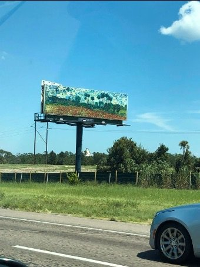

If I have eye makeup on my chin and breakfast on my sweater, how would I know?"
--Byron Katie
-------------------
"The reflection in the mirror is only made of mirror."
--Darryl Bailey
The lovely lady in the painting workshop is upset, close to tears, anxious.
She doesn’t understand what her painting means about herself.
“This isn’t my usual kind of painting,” she says tearfully, “so I don’t who I am.”
You might think it’s just a personal quirk of this one person, that simply painting something unfamiliar could bring about…
existential angst.
But actually it’s not unusual at all. And not just in painting.
I mean, let any one of us get even a hint of not recognizing ourselves- in a mirror maybe, or doing something “out of character,” and at best, there’s surprise and some discomfort.
And more typically, it’s distressing.
After all, it seems necessary, required, this “know who I am” business.
Which is perhaps kind of odd.
First, because look at what we’re expecting to tell us this important news-
A painting, a mirror, a word, an unexpected reaction.
“This paint splotch here is me when I was a child. That light-streak there in the glass is my sadness. There I am.”
Um, pssst... none of that has a clue. It just sits there- it doesn’t know who we are.
And second, because really, why is it so dang urgent to know? What’s so all-fired important, that tears and upset come if we don’t know who we are?
I mean, whatever it is, we’re that whether it’s known or not, aren’t we? A cat is a cat even if it’s unaware it’s a cat.
Knowing adds nothing.
Still, we can’t take our eyes off ourselves on the zoom screen, the building window, the mirror.
Because we’re constantly looking to be “witnessed.”
We require repeated verification of ourselves, via a view of ourselves. To be sure we’re here, we need to look at it.
Through the external, we know we exist.
Even though common sense shows that what looks back from that mirror, that painting, that zoom screen-
Of course that facsimile isn’t us.
And whatever it is that is actually reflected- the meaning, the person, the self-
That’s all “like-ness," all concepts, all ideas.
That's not us.
That can’t be mirrored. There’s nothing to reflect.
So luckily it might be a good thing that no painting or mirror is ever going to be us.
Luckily we might find we’re so much better off not knowing who we are.
Because after the initial pout, tears, and fear, and after the disappointment at losing delusion…
freedom.
Because then there’s nothing to define or measure up to. Then there’s unlimited options, surprise, fun.
Whooo hooo.
I mean, look at us, not having to be consistent. Look at us, not crammed into 2-dimensional paper, storyline, glass. Look at us, not having a mirage to try to match.
Look at us, ineffable, large, undefined, unknown.
Wow. Talk about expansive.
Why would we settle for know-what-it-is smallness
rather than THAT?
When it’s so much bigger than any concept or pretense will ever contain.
Of course we can still have fun trying to make an image out of it, though.
I mean, why not?
That's the art
and the joy
of existence.
Whatever it may happen to
look like.
"If we watch a cloud and it takes on the shape of a person, a house, or a mountain, it doesn’t matter what it looks like, we always know it’s a cloud."
--Darryl Bailey
------------------------
“...But if a mirror ever makes
you sad
you should know
that it does
not know
you.”
― Kabir
Click here to subscribe to get your Mind-Tickled every week.
Click here to see Judy on Buddha at the Gas Pump
Judy and Robert Saltzman chat here
